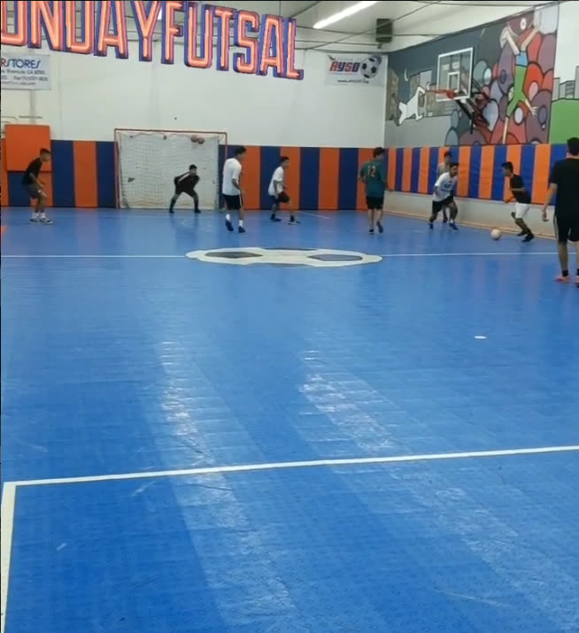
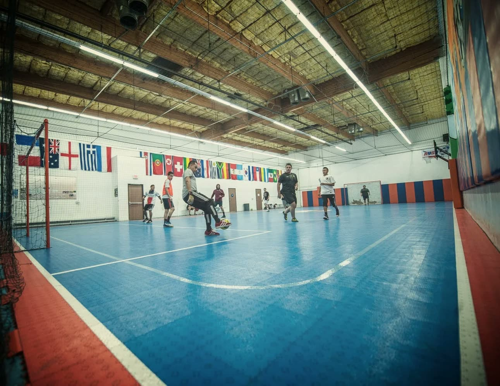

About Just Soccer
Live your passion.
Play the game.
A 5,000 sq ft indoor futsal arena in Corona, California — and the reason Coach Ernie built it.
Our mission
Just Soccer FC is devoted to providing a positive and entertaining environment that helps players reach their highest potential by focusing on the purest forms of the Sport. We are committed to players’ development, while promoting the Essence of the Game — which is health, respect and love for the community.

Who built it
Coach Ernie
Just Soccer FC is home to players that are striving to reach a higher level of play and are constantly working to improve their skills through the beautiful game of Futsal.
Just Soccer was founded by Hernan Garcia — “Coach Ernie” — who as a player and entrepreneur grew up with the dream of one day running and operating a sports facility that would provide the stage and opportunity for players and soccer enthusiasts to have access to the beautiful game.

The facility
Street-style soccer, brought indoors
Come visit us at our 5,000 sq ft indoor facility. At Just Soccer FC you will experience the unique and original form of the game known as “futsal”. We provide an exclusive atmosphere in which our street-style soccer comes to life. Our fast-paced game is played inside a state of the art soccer arena, and our non-stop action will push your skills to the best level.
Just Soccer FC offers a variety of programs directed to assist players reach their highest potential regardless of the age or level they are in. 5v5 tournaments, leagues, pick-up games and our specific training programs will revolutionize your game.